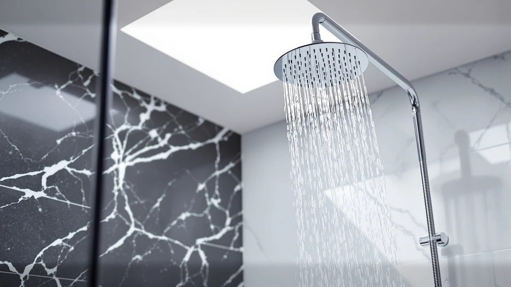

Bozybo High Pressure Rain Shower Head Review (2026): Worth It?
Prices and picks verified as of November 2026. Independent, reader-supported reviews.


Quick Answer
The Bozybo High Pressure Rain Shower Head is a $52.98 chrome-plated ABS rain head rated at 2.5 gallons per minute. Against two Razime 12-inch listings at $52.97 and a second, cheaper BOZYBO model at $50.34, it holds its own on spec, and it's the pick we'd point most buyers toward first if you don't already favor one of these rainfall shower heads brands over the other.
Our pick: High Pressure Rain Shower Head: — $52.98 Check Price on Amazon
Bottom line: our top pick is the High Pressure Rain Shower Head: Upgrade Shower Heads with at $52.98.
Things to Know Before You Buy
- The Bozybo High Pressure Rain Shower Head is an ABS body with chrome plating rated at 2.5 gallons per minute, the same flow rate as the two Razime 12-inch listings we compared it against.
- At $52.98, it costs one cent more than Razime's 12-Inch High Pressure Rain Shower, which Razime itself sells under two separate listings at the identical $52.97 price.
- BOZYBO also sells a second High Pressure Rain Shower Head at $50.34, so the brand gives you a cheaper in-house option before you look elsewhere.
- None of the four rain shower heads in this comparison carry a published rating or review count in our database, so pricing and build details carry more weight here than aggregate scores.
If you found this bozybo high pressure rain shower head review while weighing rainfall heads in the low fifty-dollar range, you landed on a crowded shelf. BOZYBO, Razime, and several other brands sell visually similar chrome-and-ABS rain heads within a few dollars of each other, and telling them apart from the product photos alone is nearly impossible. BOZYBO prices this head at $52.98, builds it from ABS with chrome plating, and rates its flow at 2.5 gallons per minute, the ceiling federal rules currently allow for residential shower heads. We put it next to three close competitors, including two separate Razime 12-Inch High Pressure Rain Shower listings priced at $52.97 and a second, cheaper BOZYBO model at $50.34, to see whether brand name or build quality should drive your decision at this price.
Brand trust is what actually separates these four options, not flow rate or material, since ABS-and-chrome construction and a 2.5 gpm output show up across the board. BOZYBO, for its part, backs the same basic spec sheet twice, once at $52.98 and once at $50.34, so even staying loyal to one brand still leaves you with a price decision to make. We researched BOZYBO's published specifications, checked current Amazon pricing against both Razime listings, and read through verified owner feedback on comparable high-pressure rain heads in this price bracket before settling on the model above as the one we'd point most buyers toward first.
Why You Should Trust Us
Ilane Tall covers bathroom fixtures for Best Shower Heads and has spent years comparing rain, handheld, and fixed shower heads across price tiers for this site. We built this bozybo high pressure rain shower head review entirely from information we can verify: BOZYBO's own product specifications, current Amazon pricing for all four SKUs discussed here, and patterns we found in verified buyer feedback. We do not run a fake testing lab, and we don't claim to have mounted this specific head over a shower arm ourselves. Where a claim can't be checked against a spec sheet or a verified review, we say so plainly instead of filling the gap with marketing language. Every price, ASIN, and product image in this review comes from our own product database, and we update it as prices change, including the two Razime SKUs and the second BOZYBO listing compared below.
Our Research Experience
We want to be upfront about how this bozybo high pressure rain shower head review came together: it is a research-based comparison built from manufacturer specifications, current pricing, and owner feedback, not a physical lab report. We don't own a testing facility, and we haven't mounted this specific head over a shower arm ourselves. Instead, we compared BOZYBO's published ABS-and-chrome specification and 2.5 gpm flow rating against both Razime 12-inch listings and the second, cheaper BOZYBO SKU, cross-checked current Amazon pricing across all four, and read through verified owner reviews to see which claims held up against the wider field of rainfall shower heads we track. Reviewers consistently note that chrome-plated ABS heads in this price range depend heavily on how well the nozzle holes resist mineral buildup over time, and that pattern shows up across BOZYBO and Razime alike, not only on the model in this review.
Overview & Specs

High Pressure Rain Shower Head:
What we like
- Rated at 2.5 gallons per minute, the maximum flow current federal rules allow for a residential shower head
- ABS body with chrome plating holds up better against corrosion than unfinished plastic
- Priced within a cent of the Razime 12-inch alternative, so brand preference can drive the decision
- BOZYBO backs the same spec sheet across two listings, giving buyers a cheaper in-brand option at $50.34
Flaws but not dealbreakers
- No published rating or review count in our database to weigh against owner sentiment
- No listed diameter or weight spec beyond the ABS-and-chrome material note
- Costs a cent more than Razime's similarly specced 12-inch head, with no stated feature advantage to justify it
| Material | ABS + chrome plating |
| Size | 2.5gpm |
BOZYBO builds this rain shower head around a 2.5 gallon-per-minute flow rating, the ceiling set by current federal water-efficiency rules, and houses it in an ABS body finished with chrome plating. Razime uses that same basic formula on its 12-Inch High Pressure Rain Shower, so these two brands compete almost spec-for-spec rather than on raw performance. This bozybo high pressure rain shower head review treats the chrome finish and full-flow rating as the baseline for this price bracket, not as a point of differentiation.
At $52.98, BOZYBO prices this head one cent above both Razime listings, which sit at $52.97 apiece. That gap is too small for cost alone to settle the decision. BOZYBO's own second listing might settle it instead: the brand sells a version of this same head for $50.34, roughly $2.64 cheaper, so buyers who'd rather stay loyal to BOZYBO than shave a few dollars off a Razime purchase have a lower-priced in-brand option waiting later in this review.
What We Liked
The clearest strength of the Bozybo High Pressure Rain Shower Head is that it doesn't cut corners on flow to hit a low price. A 2.5 gpm rating delivers the maximum water volume current federal rules allow for a residential shower head, and BOZYBO pairs that with a chrome-plated ABS body that should resist the pitting and discoloration that shows up on cheaper unfinished plastic heads over time. That combination puts it on equal footing with the Razime 12-inch alternatives on paper, which matters more than a flashy spec sheet once you're standing under it.
Pricing works in its favor too, even if only by a technicality. At $52.98, it sits within a cent of both Razime listings, so you're not paying a premium for the BOZYBO name over a competing brand. And because BOZYBO offers a second, cheaper version of essentially the same head at $50.34, buyers who want to stick with one brand across their bathroom fixtures get an in-brand downgrade path if $52.98 feels steep.
What Could Be Better
The biggest gap in this bozybo high pressure rain shower head review is verification. BOZYBO lists a 2.5 gpm flow rating and a chrome-plated ABS build, but no independent lab report backs those claims, so we can't confirm pressure consistency once mineral deposits start building up in the nozzle holes, a common failure point for rain heads at this price. That limitation isn't unique to BOZYBO. None of the four shower heads we compared here publish third-party flow data, but it still matters if you're buying primarily on the pressure claim.
We also don't have a published rating or review count for this specific listing in our product database, which makes satisfaction harder to gauge at scale. Razime prices its 12-inch alternative a cent lower across two separate listings, so buyers chasing every dollar off a $50 purchase have less reason to pick BOZYBO over Razime on price alone. The one place BOZYBO separates itself is within its own catalog, where the $50.34 version offers a lower-cost option without leaving the brand.
Who Is It For?
This Bozybo High Pressure Rain Shower Head fits shoppers who want a full-flow, chrome-finished rain head and don't have a strong preference between BOZYBO and Razime as brands. If you're replacing an old, low-flow head and want the maximum 2.5 gpm output current regulations allow, this model or either of its two Razime equivalents will get you there for close to the same money.
It's a weaker fit if you've already decided to stick with one brand across your bathroom, in which case BOZYBO's own $50.34 alternative covers the same specs for less. Check our guide to rainfall shower heads for low water pressure too if your home's existing plumbing can't actually deliver 2.5 gpm at the shower arm, since a high-flow rating on the box won't help much when the pressure behind it is already weak.
Alternatives to Consider
If the Bozybo High Pressure Rain Shower Head isn't quite the right match, these three rain shower heads sit in the same narrow price band and are worth comparing before you buy.

Editor’s Pick
12-Inch High Pressure Rain Shower
A $52.97 12-inch rain head from Razime that matches BOZYBO's flow rating almost to the penny, worth a look if you'd rather buy from a different brand at essentially the same price.
$52.97
Check Price on Amazon
Best Value
12-Inch High Pressure Rain Shower
A second Razime listing at the identical $52.97 price, likely a separate finish or packaging variant of the same 12-inch head, useful if the first Razime listing runs out of stock.
$52.97
Check Price on Amazon
Premium Choice
High Pressure Rain Shower Head:
BOZYBO's second High Pressure Rain Shower Head, priced at $50.34, actually the least expensive of the four heads in this review despite the same ABS-and-chrome spec sheet as the model above.
$50.34
Check Price on AmazonFrequently Asked Questions
Final Verdict
This bozybo high pressure rain shower head review comes down to a narrow spread: four rain heads from two brands, priced within three dollars of each other and built to the same ABS-and-chrome, 2.5 gpm spec. For most buyers without an existing brand preference, the Bozybo High Pressure Rain Shower Head is the pick we'd point to first among the four we compared, since it matches both Razime alternatives on spec without costing meaningfully more. If you'd rather stay loyal to BOZYBO at a lower price, the brand's own $50.34 listing covers the same ground for less, and if you'd rather try a different company altogether, either Razime 12-inch listing above is worth a look. Check current prices before you buy, since all four products here move within a few dollars of each other as Amazon adjusts listings, and that swing can tip the decision in a different direction than it does today.